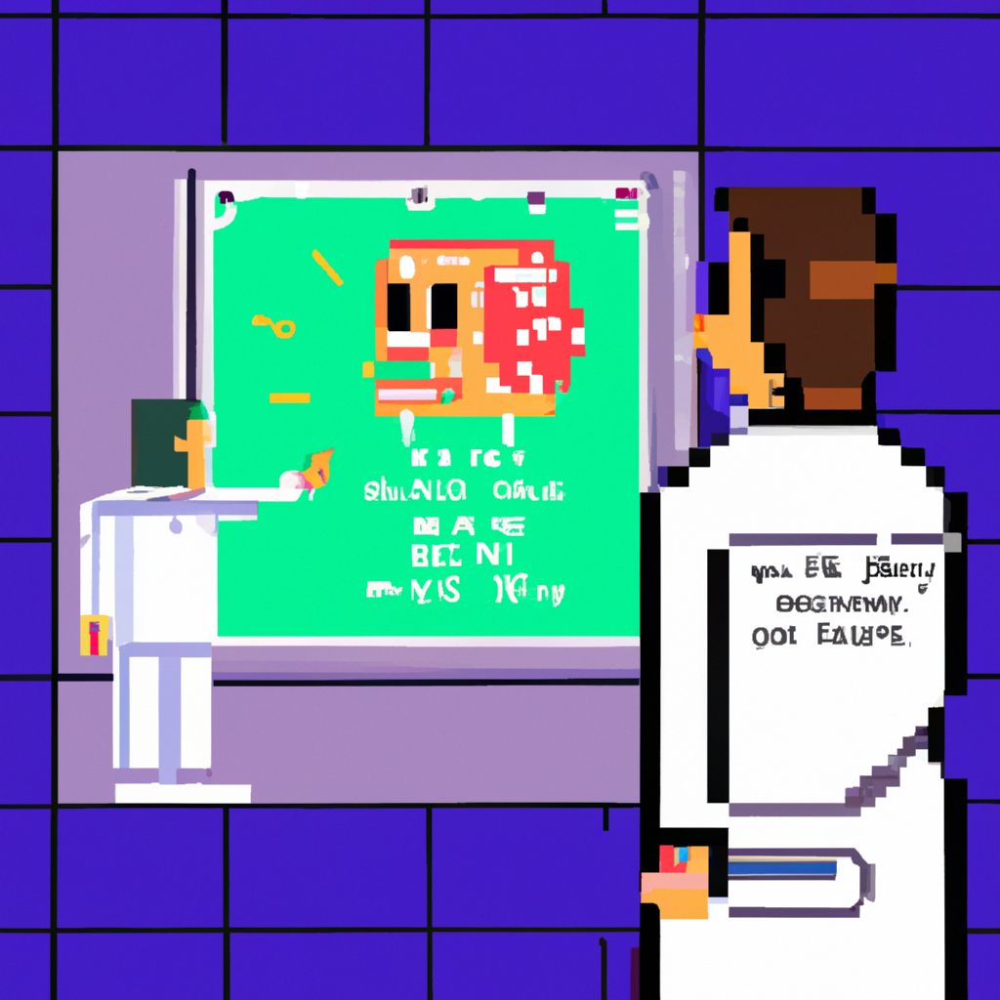

Why AI will never replace the radiologist
Artificial intelligence (AI) is becoming increasingly popular in healthcare and one of the most popular applications of AI is in the field of radiology. The idea of using AI to diagnose diseases and detect abnormalities may seem appealing, but it is important to understand that AI is no substitute for the experienced radiologist.
AI may be able to detect certain patterns in images more accurately than the human eye, but it cannot replace the expertise of a radiologist. AI can only work with the data it is given, and it cannot make any judgement calls based on the context of a particular patient. AI can also be easily fooled by subtle changes in images, and its accuracy can be affected by a variety of factors.
AI also requires a large amount of data to work with, and this can be difficult to obtain in the medical field. AI algorithms are also constantly evolving, so they are not able to keep up with changes in the medical field.
At the end of the day, AI is a tool that can be used to aid the radiologist in their work, but it will never be a replacement. It is important to remember that AI can only make decisions based on the data it is given, and it cannot make judgement calls based on the context of a particular patient. AI can be a valuable tool for radiologists, but it should never be seen as a substitute for their expertise.